## Ebola Sierra Leone analysis
## John Sample-Name Doe
## 2024-01-01
## Load packages ----
if(!require(pacman)) install.packages("pacman")
pacman::p_load(
tidyverse,
janitor,
inspectdf,
here # new package we will use soon
)
## Load data ----
ebola_sierra_leone <- read_csv("") # DATA PENDING! WE WILL UPDATE THIS BELOW.
## Cases by district ----
district_tab <- tabyl(ebola_sierra_leone, district)
district_tab
## Visualize categorical variables ----
categ_vars_plot<- show_plot(inspect_cat(ebola_sierra_leone))
categ_vars_plot
## Visualize numeric variables ----
num_vars_plot <- show_plot(inspect_num(ebola_sierra_leone))
num_vars_plot5 RStudio projects
5.1 Learning objectives
You can set up an RStudio Project and create sub-directories for input data, scripts and analytic outputs.
You can import and export data within an RStudio Project.
You understand the difference between relative and absolute file paths.
You recognize the value of Projects for organizing and sharing your analyses.
5.2 Introduction
Previously, you walked through some of the essential steps of data analysis, from importing data to calculating basic statistics. But you skipped over one crucial step: setting up a data analysis project.
Experienced data analysts keep all the files associated with a specific analysis—input data, R scripts and analytic outputs—together in a single folder. These folders are called projects (small p), and RStudio has built-in support for them via RStudio Projects (capital P).
In this lesson you will learn how to use these RStudio Projects to organize your data analysis coherently, and improve the reproducibility of your work. You will replicate some of the analysis you did in the last data dive lesson, but in the context of an RStudio Project.
Let’s get started.
5.3 Creating a new RStudio Project
Creating a new RStudio Project looks different if you are on a local computer and if you are on RStudio Cloud. Jump to the section that is relevant for you.
5.3.1 On RStudio Cloud
If you are using RStudio Cloud, you have probably already created a project, because you can’t do any analysis without projects.
The steps are pretty simple: go to your Cloud homepage, rstudio.cloud, and click on the “New Project” button.
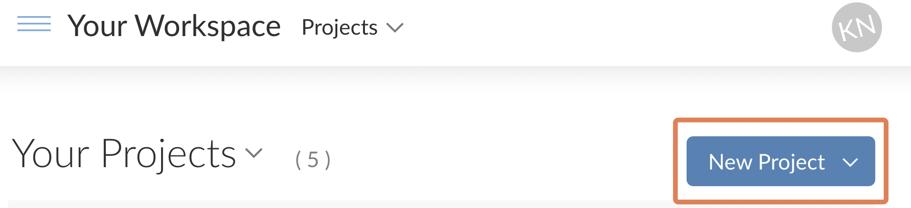
Name your Project something like ebola_analysis or ebola_analysis_proj if you already have a project named ebola_analysis.
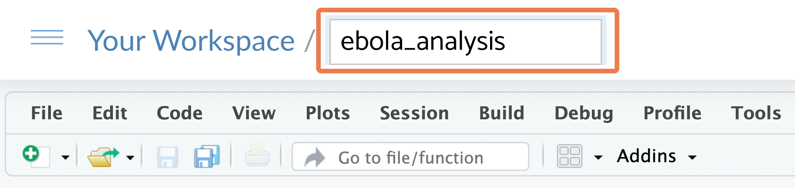
The RStudio Project you have now created is just a folder on a virtual computer, which has a .Rproj file within it (and maybe a .RHistory file). You should be able to see this .Rproj file in the Files pane of RStudio:

Key Point
The .RProj file is what turns a regular computer folder into an “RStudio Project”.
5.3.2 On a local computer
If you are on a local computer, open RStudio, then on the RStudio menu, go to File > New Project. Your options may look a little different from the screenshots below depending on your operating system.

Choose “New directory”

Then choose “New Project”:

You can call your Project something like “ebola_analysis” and make it a “subdirectory” of a folder that is easy to find, such as your desktop. (The phrase “Create project as subdirectory of” sounds scary, but it’s not; RStudio is simply asking: “where should I put the project folder”?)

The RStudio Project you have created is just a folder with a .Rproj file within it (and maybe a .RHistory file). You should be able to see this .Rproj file in the Files pane of RStudio:
Key Point
Click on the .Rproj file to open your project
The .RProj file is what turns a regular computer folder into an “RStudio Project”.
From now on, to open your project, you should double click on this .RProj file from your computer’s Finder/File Explorer.
On Windows, here is an example of what a .Rproj file will look like from the File Explorer:
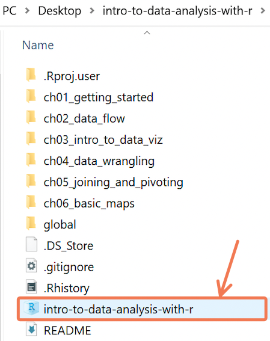
On macOS, here is an example of what a .Rproj file will look like from Finder:
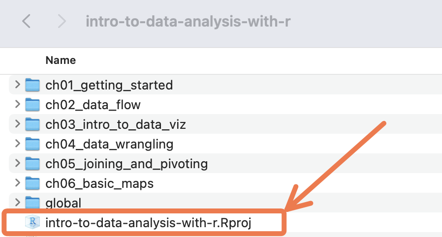
Note also that there is a header at the top right of RStudio window that tells you which Project you currently have open. Clicking on this gives you some additional Project options. You can create a new project, close a project and open recent projects, among other options.

5.4 Creating Project subfolders
Data analysis projects usually have at least three sub-folders: one for data, another for scripts, and a third for outputs, as seen below:
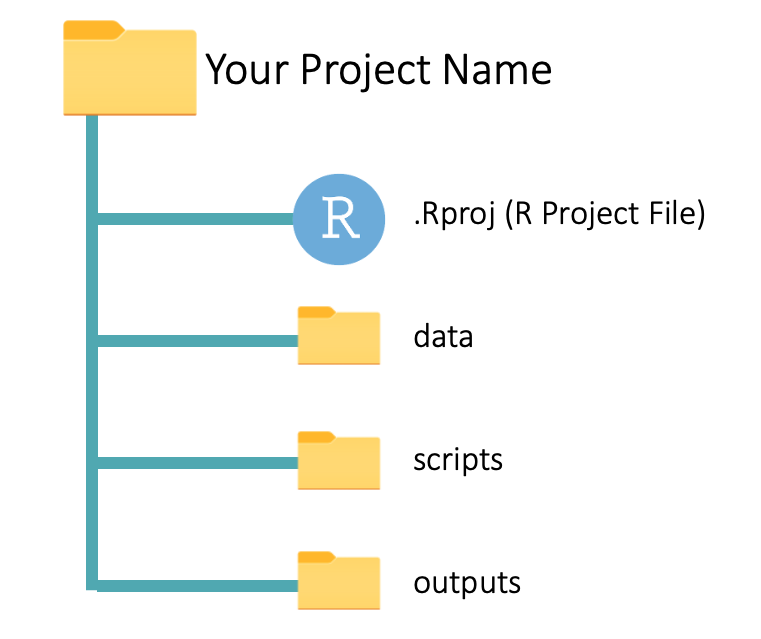
Let’s look at the sub-folders one by one:
data: This contains the source (raw) data files that you will use in the analysis. These could be CSV or Excel files, for example.
scripts: This sub-folder is where you keep your R scripts. You can also save RMarkdown files in this folder. (You will learn about RMarkdown files soon.)
outputs: Here, you save the outputs of your analysis, like plots and summary tables. These outputs should be disposable and reproducible. That is, you should be able to regenerate the outputs by running the code in your scripts. You will understand this better soon.
Now go ahead and create these three sub-folders, “data”, “scripts” and “outputs”. within your RStudio Project folder. You should use the “New Folder” button on the RStudio Files pane to do this:
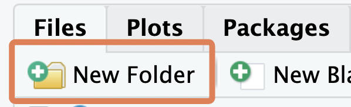
5.5 Adding a dataset to the “data” folder
Next, you should move the Ebola dataset you downloaded in the previous lesson to the newly-created “data” sub-folder (you can re-download that dataset at bit.ly/ebola-data if you can’t find where you stored it).
The procedure for moving this dataset to the “data” folder is different for RStudio Cloud users and those using a local computer. Jump to the section that is relevant for you.
5.5.1 On RStudio Cloud
If you are on RStudio Cloud, adding the dataset to your “data” folder is straightfoward. Simply navigate to the folder within the Files pane, then click the “Upload” button:
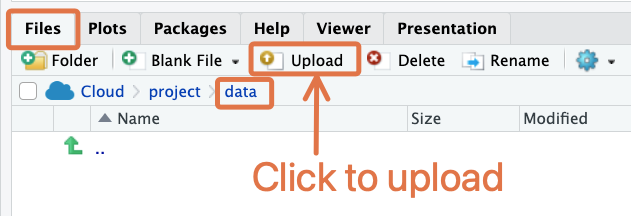
This will bring up a dialog box where you can select the file for upload.
5.5.2 On a local computer
On a local computer, this step has to be done with your computer’s File Explorer/Finder.
First, locate the Project folder with your computer’s File Explorer/Finder. If you’re having trouble locating this, RStudio can help: go to the “Files” tab, click on “More” (the gear icon), then click “Show Folder in New Window”.

This will bring you to the Project folder in your computer’s File Explorer/Finder.
Now, move the Ebola dataset you downloaded in the previous lesson to the newly-created “data” sub-folder.
Here is what moving the file might look like on macOS:
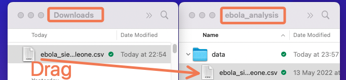
5.6 Creating a script in the “scripts” folder
Next, create and save a new R script within the “scripts” folder. You can call this “main_analysis” or something similar. To create a new R script within a folder, first navigate to that folder in the Files pane, then click the “New Blank File” button and select “R script” in the dropdown:
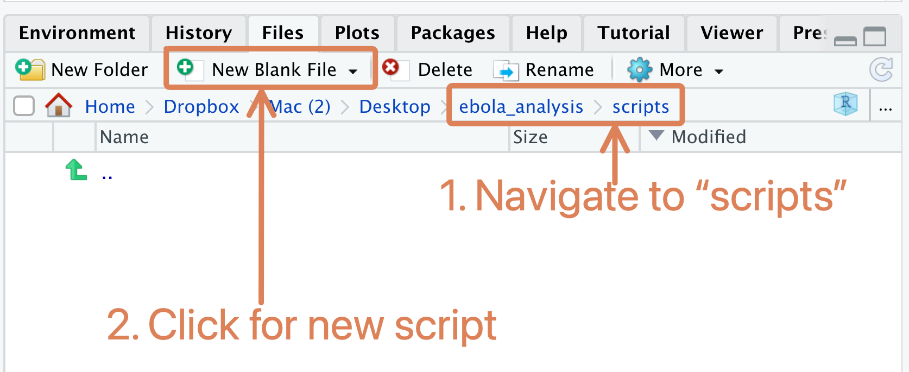
Side Note
Note that this is different from what you have done so far when creating a new script (before, you used the menu option, File > New File > New Script). The old way is still valid; but this “New Blank File” button will probably be faster for you.
Great work so far! Now your Project folder should have the structure shown below, with the “ebola_sierra_leone.csv” dataset in the “data” folder and the “main_analysis.R” script (still empty) in the “scripts” folder:

This is a process you should go through at the start of every data analysis project: set up an RStudio Project, create the needed sub-folders, and put your datasets and scripts in the appropriate sub-folders. It can be a bit painful, but it will pay off in the long run.
The rest of this lesson will teach you how to conduct your analysis in the context of this folder setup. At the end, you will have an overall flow of data and outputs that resembles the diagram below:

You should refer back to this diagram as you proceed through the sections below to help orient yourself.
5.7 Importing data from the “data” folder
We will use the code snippet below to demonstrate the flow of data through a Project. Copy and paste this snippet into your “main_analysis.R” script (but don’t run it yet). The code replicates parts of the analysis from the data dive lesson.
First run the “Load packages” section to install and/or load any needed packages.
Then proceed to the “Load data” section, which looks like this:
## Load data ----
ebola_sierra_leone <- read_csv("") # DATA PENDING! WE WILL UPDATE THIS BELOW.Here you want to import the Ebola dataset that you previously placed inside the Project’s “data” folder. To do this, you need to supply the file path of that dataset as the first argument of read_csv().
Because you are using an RStudio Project, this path can be obtained very easily: place your cursor inside the quotation marks within the read_csv() function, and press the Tab key on your keyboard. You should see a list of the sub-folders available in your Project. Something like this:
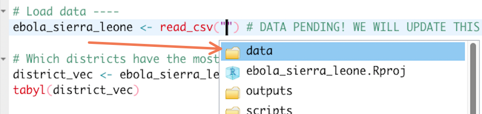
Click on the “data” folder, then press Tab again. Since you only have one file in the “data” folder, RStudio should automatically fill in it’s name. You should now see:
ebola_sierra_leone <- read_csv("data/ebola_sierra_leone.csv")Wonderful! Run this line of code now to import the data.
If this is successful, you should see the data appear in the Environment tab of RStudio:
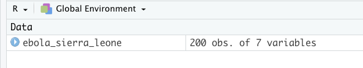
Key Point
Relative paths
The path you have used here, “data/ebola_sierra_leone.csv”, is called a relative path, because it is relative to the root (or the base) of your Project.
How does R know where the root of your Project is? That’s where the .RProj file comes in. This file, which lives in the “ebola_analysis” folder tells R “here! Here! I am in the ‘ebola_analysis’ folder so this must be the root!”. Thus, you only need to specify path components that are deeper than this root.
RStudio Projects, and the relative paths they allow you to use, are important for reproducibility. Projects that use relative paths can be run on anyone’s computer, and the importing and exporting code should work without any hiccups. This means that you can send someone an RStudio Project folder and the code should run on their machine just as it ran on yours!
This would not be the case if you were to use an absolute path, something like “~/Desktop/my_data_analysis/learning_r/ebola_sierra_leone.csv”, in your script. Absolute paths give the full address of a file, and will not usually work on someone else’s computer, where files and folders will be arranged differently.
RStudio Cloud
Note that if you are using RStudio Cloud, you are forced to use relative paths, because you cannot access the general file system of the virtual computer; you can only work within specific Project folders.
5.7.1 Using here::here()
As you have now seen, RStudio Projects simplify the data import process and improve the reproducibility of your analysis, primarily because they allow you to use relative paths.
But there is one more step we recommend when using relative paths: rather than leave your path naked, wrap it in the here() function from the {here} package.
So, in the data import section of your script, change read_csv()’s input from "data/ebola_sierra_leone.csv" to here("data/ebola_sierra_leone.csv"):
ebola_sierra_leone <- read_csv(here("data/ebola_sierra_leone.csv"))What is the point of wrapping the path in here()? Well, technically, this is no real point in doing this in an R script; the importing code works fine without it. But it will be necessary when you start using RMarkdown scripts (which you will soon be introduced to), because paths not wrapped in here() are problematic in the RMarkdown context.
So to keep things consistent, we always recommend you use here() when pointing to paths, whether in an R script or an RMarkdown script
5.8 Exporting data to the “outputs” folder
Importing data is not the only benefit of RStudio Projects; data export is also streamlined when you use Projects. Let’s look at this now.
In the “Cases by district” section of your script, you should have:
## Cases by district ----
district_tab <- tabyl(ebola_sierra_leone, district)
district_tabRun this code now; you should get the following tabular output:
district n percent
Bo 2 0.010
Kailahun 155 0.775
Kambia 1 0.005
Kenema 34 0.170
Kono 2 0.010
Port Loko 2 0.010
Western Urban 4 0.020Now, imagine that you want to export this table as a CSV. It would be nice if there was a specific folder designated for such exports. Well, there is! It’s the “outputs” folder you created earlier. Let’s export your table there now. Type out the code below (but don’t run it yet):
write_csv(x = district_tab, file = "")With the write_csv() function, you are going to “write” (or “save”) the district_tab table as a CSV file.
The x argument of write_csv() takes in the object to be saved (in this case district_tab). And the file argument takes in the target file path. This target file path can be a simple relative path: “outputs/district_table.csv”. (And, as mentioned before, we should wrap the path in here().) Type this up and run it now:
write_csv(x = district_tab, file = here("outputs/district_table.csv"))The path “outputs/district_table.csv” tells write_csv() to save the plot as a CSV file named “districts_table” in the “outputs” folder of the Project.
Side Note
You can replace “district_table.csv” with any other appropriate name, for example “freq table across districts.csv”:
write_csv(x = district_tab, file = here("outputs/freq table across districts.csv"))Great work! Now, if you go to the Files tab and navigate to the outputs folder of your Project, you should see this newly created file:
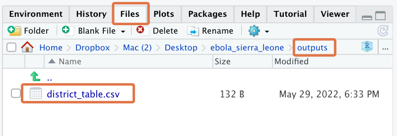
You can click on the file to view it within RStudio as a raw CSV:
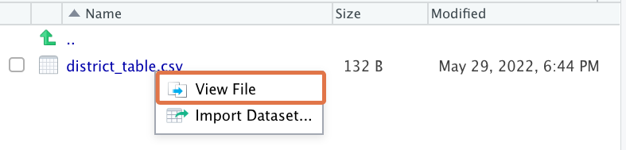
This should bring up an RStudio viewer window:

If you instead want to view the CSV in Microsoft Excel, you can navigate to the same file in your computer’s Finder/File Explorer and double-click on it from there.
Reminder
To locate your Project folder in your computer’s Finder/File Explorer, go the “Files” tab, click on the gear icon, then click “Show Folder in New Window”.
RStudio Cloud
If you are on RStudio cloud, then you won’t be able to view the CSV in Microsoft Excel until you have “exported” it. Use the “Export” menu option in the Files tab. If this is not immediately visible, click on the gear icon to bring up “More” options, then scroll through to find the “Export” option.
5.8.1 Overwriting data
If you need to update the output CSV, you can simply rerun the write_csv() function with the updated data object.
To test this, replace the “Cases by district” section of your script with the following code. It uses the arrange() function to arrange the table in order of the number of cases, n:
## Cases by district ----
district_tab <- tabyl(ebola_sierra_leone, district)
district_tab_arranged <- arrange(district_tab, -n)
district_tab_arranged( -n means “sort in descending order of the n variable”; we will introduce you to the arrange function properly later on.)
The output should be:
district n percent
Kailahun 155 0.775
Kenema 34 0.170
Western Urban 4 0.020
Bo 2 0.010
Kono 2 0.010
Port Loko 2 0.010
Kambia 1 0.005You can now overwrite the old “district_table.csv” file by re-running the write_csv function with the district_tab object:
write_csv(x = district_tab_arranged, file = here("outputs/district_table.csv"))To verify that the dataset was actually updated, observe the “Modified” time stamp in the RStudio Files pane:
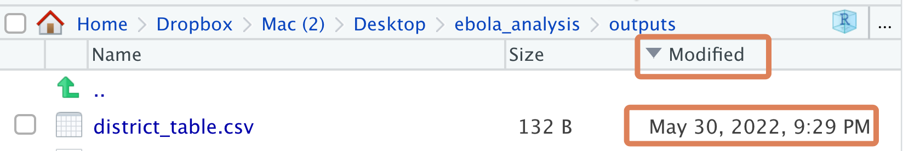
5.9 Exporting plots to the “outputs” folder
Finally, let’s look at plot exporting in the context of an RStudio Project.
In the “Visualize categorical variables” section of your script, you should have:
## Visualize categorical variables ----
categ_vars_plot<- show_plot(inspect_cat(ebola_sierra_leone))
categ_vars_plotRunning these code lines should give you this output:

Below these lines, type up the ggsave() command below (but don’t run it yet):
ggsave(filename = "", plot = categ_vars_plot)This command uses the ggsave() function to export the categ_vars_plot figure. The plot argument of ggsave() takes in the object to be saved (in this case categ_vars_plot), and the filename argument takes in the target file path for the plot.
As you saw when exporting data, this target file path is quite simple because you are working in an RStudio Project. In this case, you have:
ggsave(filename = "outputs/categorical_plot.png", plot = categ_vars_plot)Run this ggsave() command now. The path “outputs/categorical_plot.png” tells ggsave() to save the plot as a PNG file named “categorical_plot” in the “outputs” folder of the Project.
To see this newly-saved plot, navigate to the Files tab. You can click on it to open it with your computer’s default image viewer:

Also note that the the ggsave() function lets you save plots to multiple image formats. For example, you could instead write:
ggsave(filename = "outputs/categorical_plot.pdf", plot = categ_vars_plot)to save the plot as a PDF. Run ?ggsave to see what other formats are possible.
Now let’s export the second plot, the numerical summary. In the section of your script called “Visualize numeric variables”, you should have:
## Visualize numeric variables ----
num_vars_plot <- show_plot(inspect_num(ebola_sierra_leone))
num_vars_plotRunning these code lines should give you this output:
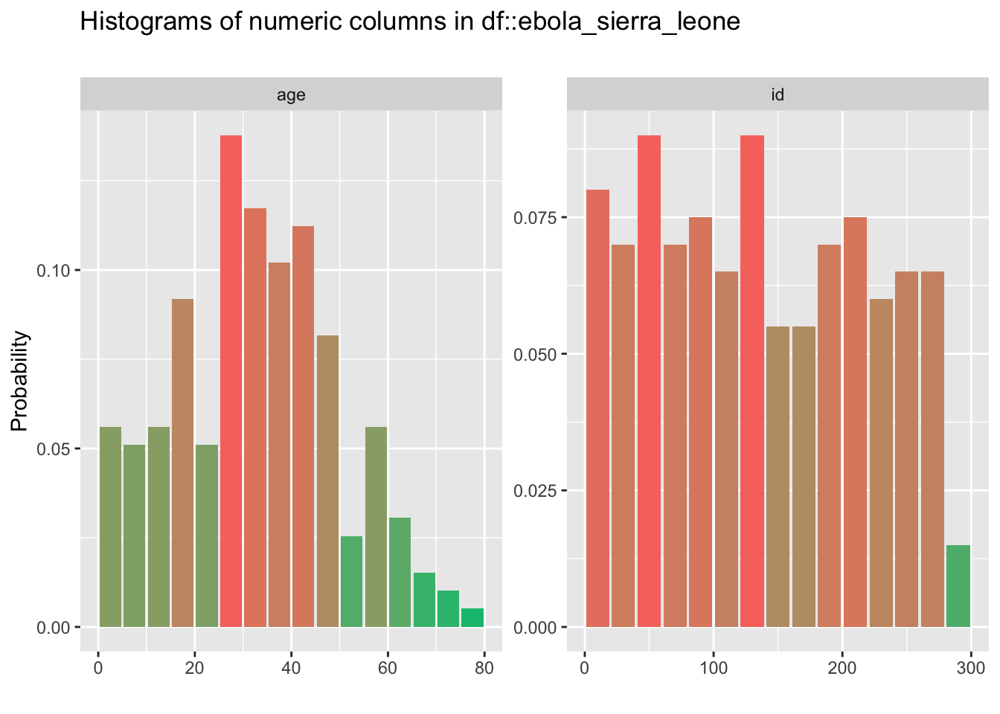
To export this plot, type up and run the following code:
ggsave(filename = "outputs/numeric_plot.png", plot = num_vars_plot)Wonderful!
5.11 Wrapping up
Congratulations! You now know how to set up and use RStudio Projects!
Hopefully you see the value of organizing your analysis scripts, data and outputs in this way. Projects are a coherent way to structure your analyses, and make it easy to revisit, revise and share your work. They will be the foundation for much of your work as a data analyst going forward.
That’s it for now. See you in the next lesson.
References
Some material in this lesson was adapted from the following sources:
- Wickham, H., & Grolemund, G. (n.d.). R for data science. 8 Workflow: projects | R for Data Science. Retrieved May 31, 2022, from https://r4ds.had.co.nz/workflow-projects.html
This work is licensed under the Creative Commons Attribution Share Alike license.